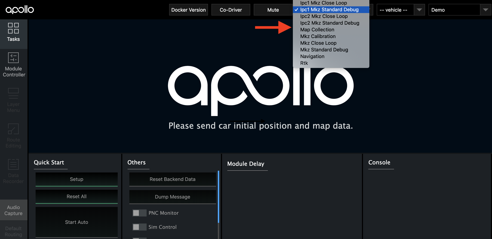
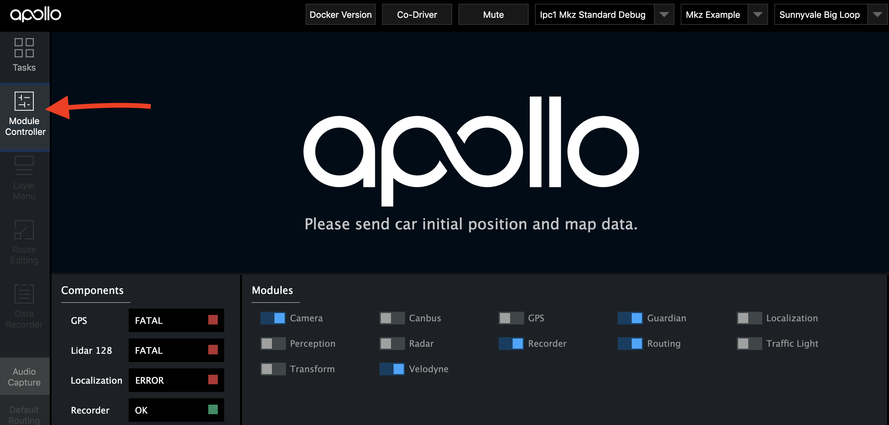

How to set up Apollo 3.5's software on Dual-IPCs
The modules of Apollo 3.5 are separately launched from two industrial PCs. This guide introduces the hardware/software setup on two parallel IPCs.
Software
- Apollo 3.5
- Linux precision time protocol
Runtime Framework
- CyberRT
Installation
There are two steps in the installation process: - Clone and install linux PTP code on both of IPCs - Clone Apollo 3.5 Github code on both of IPCs
Clone and install linux PTP
Install PTP utility and synchorize the system time on both of IPCs.
```sh git clone https://github.com/richardcochran/linuxptp.git cd linuxptp make
# on IPC1:
sudo ./ptp4l -i eth0 -m &
# on IPC2:
sudo ./ptp4l -i eth0 -m -s &
sudo ./phc2sys -a -r &
```
Clone Apollo 3.5
Install Apollo 3.5 on local ubuntu machine
sh
git clone https://github.com/ApolloAuto/apollo.git
### Build Docker environment Refer to the How to build and release docker guide
### Run CyberRT on both of IPCs
1. Change directory to apollo
sh
cd apollo
2. Start docker environment
sh
bash docker/scripts/dev_start.sh
3. Enter docker environment
sh
bash docker/scripts/dev_into.sh
4. Build Apollo in the Container:
sh
bash apollo.sh build_opt_gpu
5. Change CYBER_IP in cyber/setup.bash to IPC1's ip address:
sh
source cyber/setup.bash
6. Start CyberRT and Dreamview:
sh
bash scripts/bootstrap.sh
-
Open Chrome and go to localhost:8888 to access Apollo Dreamview:
-
on IPC1
The header has 3 drop-downs, mode selector, vehicle selector and map selector.

Select mode, for example "ipc1 Mkz Standard Debug"

Select vehicle, for example "Mkz Example"

Select map, for example "Sunnyvale Big Loop"

All the tasks that you could perform in DreamView, in general, setup button turns on all the modules.

All the hardware components should be connected to IPC1 and the modules, localization, perception, routing, recorder, traffic light and transform, are allocated on IPC1 also.
Module Control on sidebar panel is used to check the modules on IPC1

In order to open dreamview on IPC2, user must stop it on IPC1 by using the below command:
sh # Stop dreamview on IPC1 bash scripts/bootstrap.sh stop -
on IPC2 Change CYBER_IP in cyber/setup.bash to IPC2's ip address:
sh source cyber/setup.bashStart dreamview on IPC2 by using the below command:
sh # Start dremview on IPC2 bash scripts/bootstrap.shSelect mode, vehicle and map on dreamview as the same operations on IPC1
The modules - planning, prediction and control are assigned on IPC2.
Module Control on sidebar panel is used to check the modules on IPC2

-
-
How to start/stop Dreamview:
The current version of Dreamview shouldn't run on the different IPCs simultaneously, so the user must perform it alternatively on IPC1 or IPC2.
The code below can be used to stop Dreamview on IPC2 and start it on IPC1.
```sh # Stop Dreamview on IPC2 bash scripts/bootstrap.sh stop
# Start Dreamview on IPC1
bash scripts/bootstrap.sh
```
-
Cyber monitor
Cyber monitor is CyberRT's tool used to check the status of all of the modules on local and remote machines. The User may observe the activity status of all the hardware and software components and ensure that they are working correctly.
Future work (To Do)
- Multiple Dreamviews may run simultaneously
- Fix a bug that modules are still greyed-out after clicking the setup button. Users may check each modules' status by using the command
sh ps aux | grep mainboard